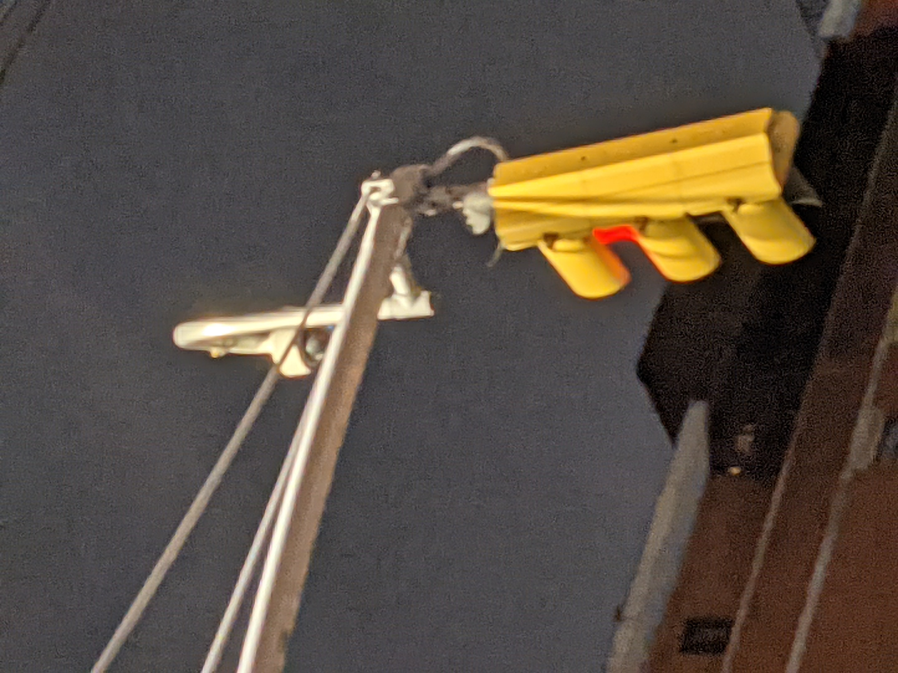

Digital Infrastructure and the Politics of Sight (cont.)
This is something can never come to light within our current conception of the digital, which obscures our sight of the fact that digital infrastructure requires precious resources to be maintained.
Even within the small amount of sight that is sometimes given to the general public, there is still a degree of obfuscation and of rendering invisible. In “Where the Internet Lives,” media theorists Jennifer Holt and Patrick Vonderau have an entire section dedicated to the “technopolitics of hypervisibility,” perfectly illustrating techniques used to render reality invisible by giving a veneer of the genuine.
“The structures where this all takes place have also been hyperstylized to showcase the natural environment and seemingly make the visual argument that the landscape is even more beautiful because of the giant data center in the picture … In many ways, these representational strategies employed by Google and Bahnhof are emblematic of the argument Parks makes in her work on “antenna trees” and the politics of infrastructure visibility: “By disguising infrastructure as part of the natural environment,” she writes, “concealment strategies keep citizens naive and uninformed about the network technologies they subsidize and use each day.”” (p. 75-76, Holt & Vonderau, 2017).
